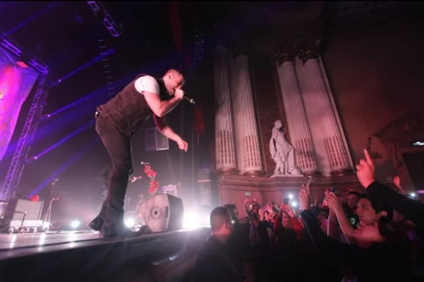
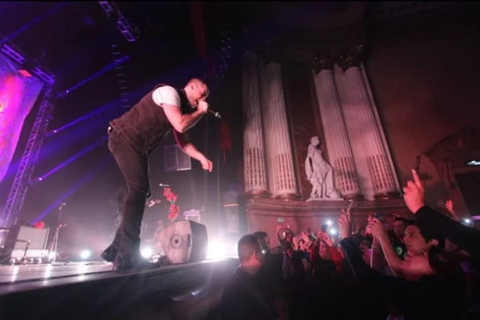

Giras
Tour Carmesi
Carmesí es el primer álbum de estudio de José Madero, quien fue vocalista de la banda mexicana de rock alternativo Panda desde su formación en 1996, hasta su descanso indefinido en 2016.
El álbum tiene sonidos variados, resultado de mezclas entre instrumentos acústicos y eléctricos a lo largo del mismo, que podría definir su género como pop rock, o pop alternativo. Sin embargo, varias canciones tienen su personalidad propia y su estilo marcado.
 

Una noche con José Madero
Contrario al disco anterior, Carmesí, las canciones para esta nueva producción fueron escritas y compuestas por Madero en 2016, a escasos meses de su grabación en el estudio en 2017. Algunas de las canciones hablan sobre temas más oscuros, sin dejar completamente de lado el desamor, que ha sido la constante durante la gran parte de la carrera de José Madero.
Las letras de este nuevo álbum no poseen un tema en común, y el único hilo conductor sería el que las canciones hablarían de diferentes actividades nocturnas. En cuanto a sonido, el compositor argumenta que vendrá más cargado de guitarras (no distorsionadas) que su antecesor.
Psalmos 19:20
Psalmos es el nombre del cuarto álbum de estudio de José Madero, lanzado el 6 de septiembre de 2019. El álbum contiene 12 canciones y tiene un sonido más apegado al britpop, según palabras de su autor.
Originalmente, la temática iba a ser destinada a tocar el lado oscuro del personaje de ficción Peter Pan pero el cantante terminó plasmando sus últimas experiencias personales en las canciones que habrían de conformar el disco.